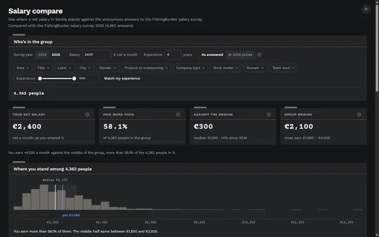
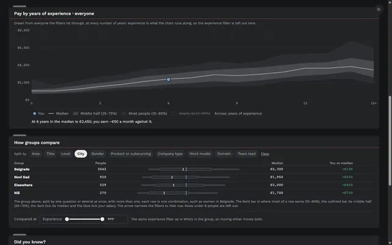
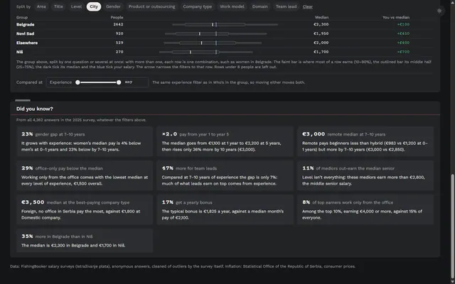

Salary compare
See where a net salary in Serbia stands against thousands of anonymous survey answers
Shots
-

View larger1 Where a salary of €2,400 stands: percentile, median gap and the distribution (sample data) -

View larger2 Pay by years of experience, and how cities compare (sample data) -

View larger3 Findings drawn from all answers in the 2025 survey


Salary compare places a net monthly salary against the anonymous answers to the FishingBooker salary surveys for 2024 and 2025. Pick any group with the filters (area, level, city, company type, work model and more) to see your percentile, the group median, pay by years of experience and how groups compare. It can raise older answers by Serbian consumer inflation to compare in today's prices. There is no backend: what you enter stays in your own browser.
Highlights
- Percentile, median gap and distribution for any filtered group of 4,000+ answers
- Experience curve with median and 25–75% / 10–90% bands, with your own point on it
- Group comparison split by one or several questions at once; rows under 8 people are hidden
- Auto-generated findings, e.g. the gender gap by experience and remote vs office pay
- 'In 2026 prices' option using official Serbian consumer price inflation; runs fully client-side
- Period
- OCT 2026
- Status
- working
- Kind
- tool
- Stack
- Vue 3
- TypeScript
- Vite
- Tailwind CSS v4
- Reka UI
- VueUse
- Vitest
- Testing Library